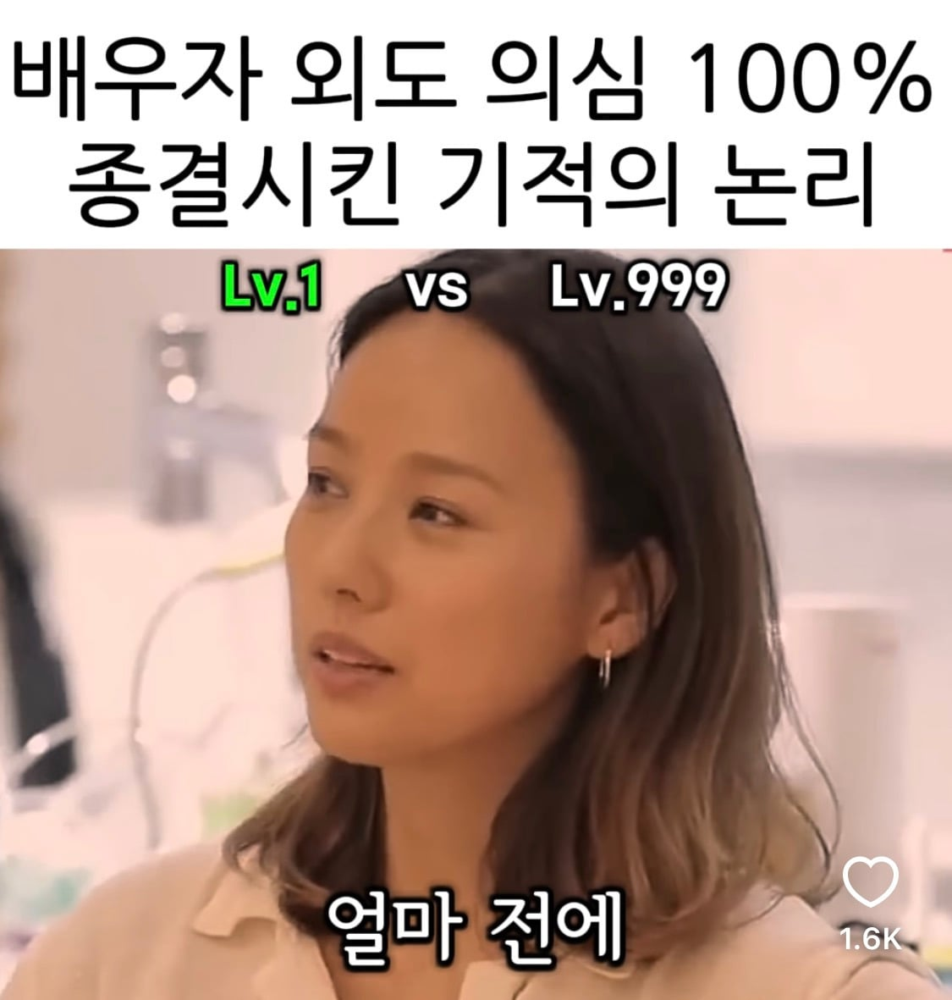
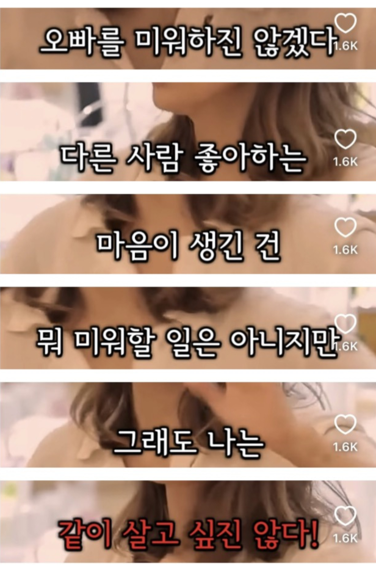
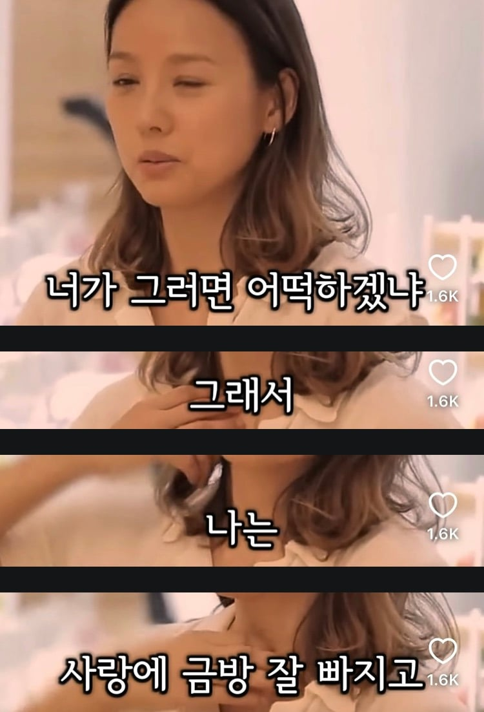
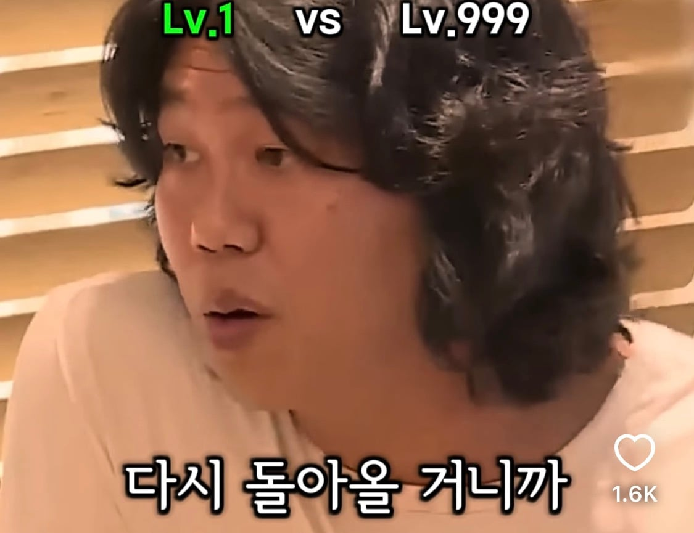
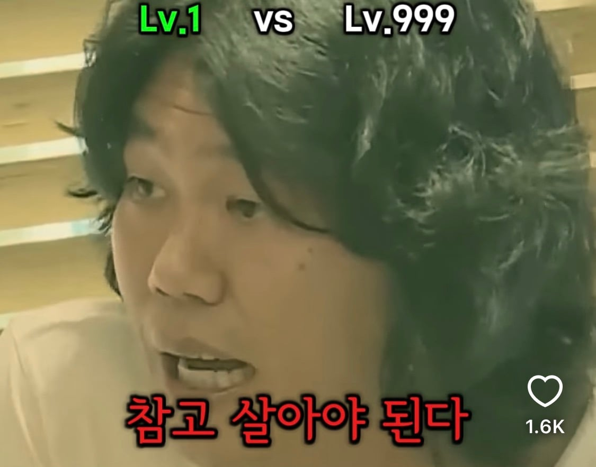

ㅋㅋㅋㅋ





ㅋㅋㅋㅋ
하하하 돌아온다는 신용점수가 1000점 인가보네.
이효리면....조금은 기다릴거 같긴해
통계가 정직하게 말해주는
월 1000 이상 버는 남자랑 살면
바람피워도 이혼확율이 확줄어드는거랑 같은거지
이효리면 같진...않지
상순?남순? 쟤 집 잘 살음? 이효리 이상형이 김제동이라고 인터뷰 한적은 있었는데 키큰 김제동인가
https://www.sportschosun.com/entertainment/2025-06-28/202506280100196600028070
금수저임
돈 많은 키큰 김제동이구나
그럼 그냥 김제동이 아닌거 아냐...?
둘다 못생겼다는 공통점이 있지
그래도 쥐상인 김제동 보다는 쟤가 낫지 않나??ㅋㅋ
실물보면 못생기진 않음
돈많고 키크고 기타 잘치고 성격도 안정적이고 일침 안놓는 김제동
그럼 그냥 김제동이랑 상관없잖아 ㅋㅋㅋㅋ
사실 선고운 미남형 아니라 그렇지 옛날에 태어났으면 무신 한자리 꿰찼을 스타일임 ㅋㅋㅋㅋ
추남이어도 호감형과 비호감형의 차이는 꽤 크다고 생각함
너 상순형한테 기타로 맞아볼래??
애초에 그럴 사람이 아니니까ㅋㅋㅋㅋ
이효리면 기다린다는 뭔 말같지도 않은 댓글들 왜케 많아
효리누나면 10년은 기다려본다ㅋㅌ